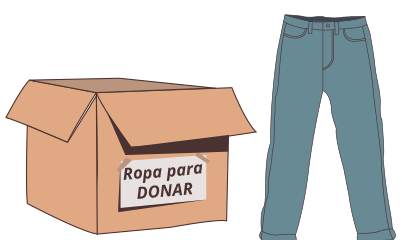
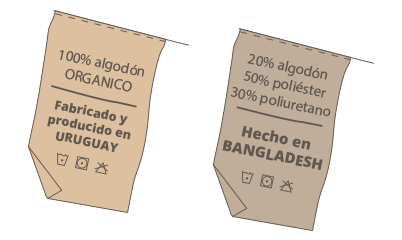
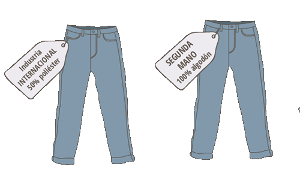

Reutilizar prendas dándoles un nuevo uso o valor, así reducimos la cantidad de ropa nueva que adquirimos con esta estrategia.
Donar o intercambiar ropa que ya no utilizas, además de alargar la vida útil de las prendas estarás ayudando a personas que la necesitan.


Apostar por la compra de prendas de producción local y prestar atención a su composición.
Comprar ropa de segunda mano, algo que está muy de moda y aparte de adquirir una prenda de buena calidad a buen precio estás contribuyendo a prolongar su vida útil.

¡De esta manera podrás vestir sustentable y también ahorrarás mucho dinero!